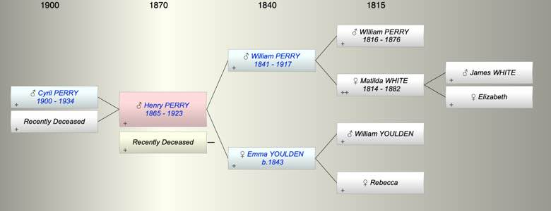

| [Index] |
| Henry PERRY (1865 - 1923) |
|  |
| b. 1865 at Thurleston |
| m. Late |
| d. 1923 at Plymouth aged 58 |
| Near Relatives of Henry PERRY (1865 - 1923) | ||||||
| Relationship | Person | Born | Birth Place | Died | Death Place | Age |
| Grandfather | WIlliam PERRY | 1816 | 27 Jan 1876 | Kelly Devon | 60 | |
| Grandmother | Matilda WHITE | 1814 | Scotland | 26 Jul 1882 | Kelly Devon | 68 |
| Grandfather | William YOULDEN | |||||
| Grandmother | Rebecca | |||||
| Mother in Law | Sarah Agnes HAMMETT | 1841 | Plymton | 1880 | 39 | |
| Father | William PERRY | 1841 | Kelly Devon | 1917 | Ontario Canada | 76 |
| Mother | Emma YOULDEN | 1843 | Kelly Devon | |||
| Self | Henry PERRY | 1865 | Thurleston | 1923 | Plymouth | 58 |
| Wife | Living or Recently Deceased | |||||
| Son | Cyril Robert PERRY | 16 Mar 1900 | Plymouth | 1934 | Plymouth | 34 |
| Son | Living or Recently Deceased | |||||
| Daughter in Law | Living or Recently Deceased | |||||
| Daughter in Law | Living or Recently Deceased | |||||
| Niece | Living or Recently Deceased | |||||
| Niece | Living or Recently Deceased | |||||
| Niece | Living or Recently Deceased | |||||
| Nephew | Harold Edgar COX | 1919 | Teignmouth | |||
| Brother in Law | Charles Goodwin BREWER | 1884 | ||||
| Brother in Law | George Goodwin BREWER | 27 Jan 1886 | Teignmouth | 1894 | 8 | |
| Sister in Law | Living or Recently Deceased | |||||
| Sister in Law | Living or Recently Deceased | |||||
| Brother in Law | Stewart G BREWER | 05 Jul 1890 | Teignmouth | 1892 | 2 | |
| Events in Henry PERRY (1865 - 1923)'s life | |||||
| Date | Age | Event | Place | Notes | Src |
| 1865 | Henry PERRY was born | Thurleston | ex 1911 census | ||
| 16 Mar 1900 | 35 | Birth of son Cyril Robert PERRY | Plymouth | Note 1 | |
| 1917 | 52 | Death of father William PERRY (aged 76) | Ontario Canada | ||
| 1923 | 58 | Henry PERRY died | Plymouth | ||
| Note 1: ex RAF records Ancestry 1911 census |
| Personal Notes: |
|
see https://www.ancestry.co.uk/family-tree/person/tree/33152857/person/19081753769/facts
1871 with parents William b 1842 and Emma b 1844 1891 with his uncle Robert Henry hammett and his future wife |
| Created on a Mac™ using iFamily for Mac™ on 15 Sep 2023 |